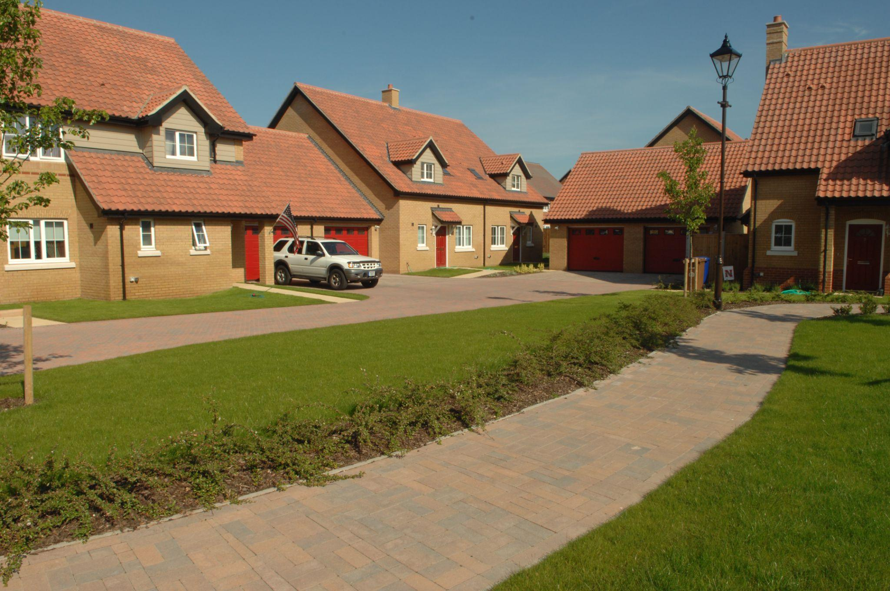
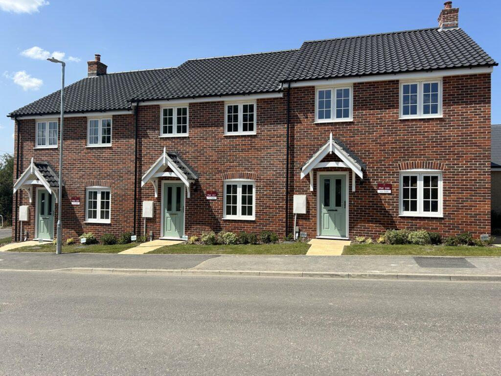

Base Housing The Military Housing Office (MHO) is located on RAF Lakenheath (Building 429) next to gate 2. There are 1,006 Military Family Housing (MFH) units serving the Tri-Base Area, RAF Lakenheath, Mildenhall, and Feltwell. MFH units are available for active-duty military, of all ranks, who are accompanied by command-sponsored dependents.
If you are interested in MFH on the installations, please register your interest at www.home.mil/HEAT. Please note that this is advance notice that you desire MFH. You will not be added to the waitlist until you arrive on station and have attended the Newcomer’s Briefing.
Currently the Military Family Housing is experiencing high occupancy levels, you may get a house offer if one is available in your category, but this is not guaranteed.

Housing Assistance
+44 (0)1638 52 2000 DSN 314-226-2000 48ces.housingassistance@us.af.mil
On-Base Housing (MFH)
+44 (0)1638 52 2064 DSN 314-226-2064 DSN 314-226-2064 48ces.mfh@us.af.mil
Housing Office Website
https://www.housing.af.mil/Home-depricated/Units/RAF-Lakenheath/fbclid /IwAR1GdSxQD7ioGXJcrz2tod1bRgrzEi5EjPnBGX_gxSHIkYZNdTGC7aSMs-s/

Off Base Housing
Moving to a new country can often be confusing and stressful; however, it can also be exciting. Living off base provides members and families the chance to experience a new culture and make friends with their host country neighbors.
Housing within close proximity to the base is primarily detached (single house), semi-detached (duplex) and terraced (in rows). British houses are generally smaller with narrow hallways, doorways and kitchens that do not accommodate United States-specific appliances or rooms that accommodate larger U.S. furniture.
Please do not make a firm commitment for off-base housing until after you have arrived and viewed the property.
To expedite your housing search, please refer to HOMES.MIL to view available pre-inspected homes under the RAF Lakenheath Rental Partnership Program (RPP).
Search the Right Move website to search for homes currently available in the local area.: https://www.rightmove.co.uk/
Off-Base Housing (Community)
+44 (0)1638 52 2063 DSN 314-226-2063 DSN 314-226-2000, option 1
Local Communities
Beck Row
Beck Row is a small Suffolk village located just 6 miles from RAF Lakenheath, making it one of the closest and most convenient places to live for personnel on base. The drive to the main gate typically takes around 10–15 minutes. The village is only 0.25 miles from the neighbouring market town of Mildenhall, which provides a few amenities including a post office, supermarket, and restaurants. Local village amenities include a primary school, pub, takeaway facilities, and a nature reserve featuring around 200 ancient oaks. Beck Row is also conveniently placed just 5 miles from the A11, providing straightforward road links toward Cambridge and London. It is a popular choice for military families due to its proximity to both RAF Lakenheath and RAF Mildenhall.
Brandon
Brandon is a small market town in Suffolk sitting just 8 miles from RAF Lakenheath, with a typical drive to the base of around 12–14 minutes. It offers an affordable alternative to larger nearby towns while still providing essential local amenities including shops, schools, and healthcare facilities. The town is on the edge of the vast Thetford Forest Park, making it a great base for outdoor enthusiasts who enjoy walking, cycling, and wildlife. Brandon has its own railway station on the Ely–Norwich line, giving residents a public transport option into Cambridge and beyond. The town has a close-knit community feel and a slower pace of life that many find appealing after a busy shift on base. A direct bus service also operates between Brandon and RAF Lakenheath, departing from Old Forge Court and arriving at The Cedars stop.
Thetford
Thetford is a historic Norfolk market town located approximately 12 miles by road from RAF Lakenheath, with a typical drive taking around 20–25 minutes. It is one of the most affordable towns of significant size in the region, making it an attractive option for those looking to maximise their housing budget. The town sits on the A11 at the Norfolk–Suffolk border and has a railway station on the Norwich–Cambridge line, with direct services to Cambridge taking approximately 45 minutes and Ely around 25 minutes. Surrounded by Thetford Forest, one of the largest lowland pine forests in Britain, the area is ideal for families and outdoor lovers. Thetford has a rich history and the town centre features medieval ruins, museums, and a theatre. A direct bus service (Line 80) also operates between Thetford and RAF Lakenheath for those without a vehicle.
Bury St Edmunds
Bury St Edmunds is a thriving Suffolk market town located approximately 21 miles from RAF Lakenheath, with a drive to the base typically taking around 29–30 minutes. It is widely regarded as one of East Anglia's most desirable places to live, offering a rare blend of medieval charm, Georgian architecture, and modern conveniences all within a compact, walkable town centre. The town boasts an excellent range of schools, from highly-rated primaries through to further education at West Suffolk College, which holds an outstanding Ofsted rating. Residents enjoy a vibrant food and drink scene, with Bury St Edmunds earning recognition as Suffolk's "Foodie Capital," home to a Michelin-starred restaurant and a Michelin Bib Gourmand recipient. The town has its own railway station with direct services to Cambridge, Ipswich, and Peterborough, and the Arc Shopping Centre provides a full range of retail and leisure options. For families looking for a fuller community experience with strong amenities and good schools, Bury St Edmunds is one of the top choices in the area.
Red Lodge
Red Lodge is a village in Suffolk, situated approximately 11 miles from RAF Lakenheath, with a typical car journey of around 15–20 minutes via the A11. It is a rapidly growing village that has expanded significantly in recent decades, offering a mix of modern housing developments that are popular with families and commuters alike. The village has good access to the A11 dual carriageway, making road commutes to both the base and nearby Newmarket or Cambridge relatively straightforward. While village amenities are more limited than larger towns, Newmarket and Mildenhall are both a short drive away for shopping, schools, and leisure. Red Lodge has a primary school and a community feel typical of Suffolk village life, making it
a quiet and affordable choice for those who prefer a rural setting. For those without a car, a bus connection to RAF Lakenheath is available, though it involves a transfer and takes considerably longer.
Newmarket
Newmarket is a famous racing town located on the Suffolk–Cambridgeshire border, approximately 16 miles by road from RAF Lakenheath, with a typical drive of around 25–30 minutes. World-renowned as the "Home of Horseracing," the town has a unique character shaped by over sixty horse breeding studs, the iconic Newmarket Racecourse, and Tattersalls, the world's oldest bloodstock auctioneers. Despite its specialist identity, Newmarket offers a well-rounded range of everyday amenities including a retail park, large supermarkets, a leisure centre, and a variety of restaurants and pubs. The town has its own railway station with direct services to Cambridge, providing easy access to the wider rail network for those commuting or travelling for leisure. Newmarket is situated on the A14 corridor, which gives good road access towards Cambridge to the west and Bury St Edmunds to the east. It is a lively and safe town with a strong local community, offering a distinctive lifestyle that sets it apart from other options in the region.
Cambridge
Cambridge is a world-famous university city located approximately 30 miles by road from RAF Lakenheath, with a typical drive taking around 40–45 minutes depending on traffic. It offers an exceptional quality of life with outstanding schools, world-class cultural attractions, extensive green spaces, and a vibrant food and social scene that caters to all tastes. The city is well served by rail, with a direct train to Lakenheath station taking around 38 minutes, after which a short taxi or bus ride reaches the base.
Cambridge is generally considered one of the safer urban areas in the UK and is consistently ranked among the country's top cities for quality of life, making it particularly popular with families. Housing costs are higher than the surrounding towns, though more affordable neighbourhoods such as Chesterton, Trumpington, and Cherry Hinton offer good value while still providing access to excellent schools, local amenities, and transport links.
For those willing to take on a longer commute in exchange for city living, Cambridge is hard to beat as a base for life in the Lakenheath area.
Ely
Ely is a historic cathedral city in Cambridgeshire located approximately 15 miles by road from RAF Lakenheath, with a typical drive taking around 20–25 minutes. The city is dominated by the iconic Ely Cathedral, one of England's most impressive Gothic structures, and offers a strong sense of community combined with excellent rail connectivity. Ely railway station provides direct services to Cambridge in around 20 minutes and to London King's Cross in approximately 90 minutes, making it an excellent choice for dual-career households or those who travel regularly. The city has a good range of schools, independent shops, restaurants, cafés, and a twice-weekly market, giving residents a fulfilling everyday lifestyle without needing to travel far. Compared to Cambridge, Ely offers notably better value for money on housing while still benefiting from strong property values and rental demand. The surrounding Cambridgeshire countryside and the River Great Ouse provide beautiful walking and cycling opportunities, making Ely a popular choice for those who want a balance of convenience, character, and outdoor lifestyle.
Keep this guide handy.
Download the PDF version for easy reference offline.